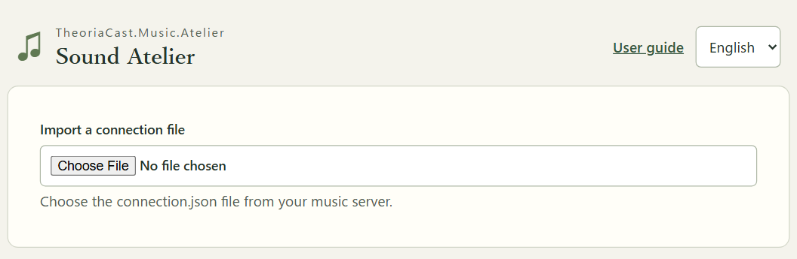
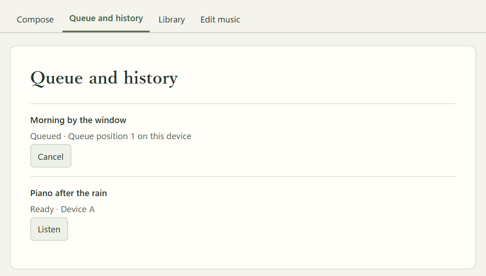
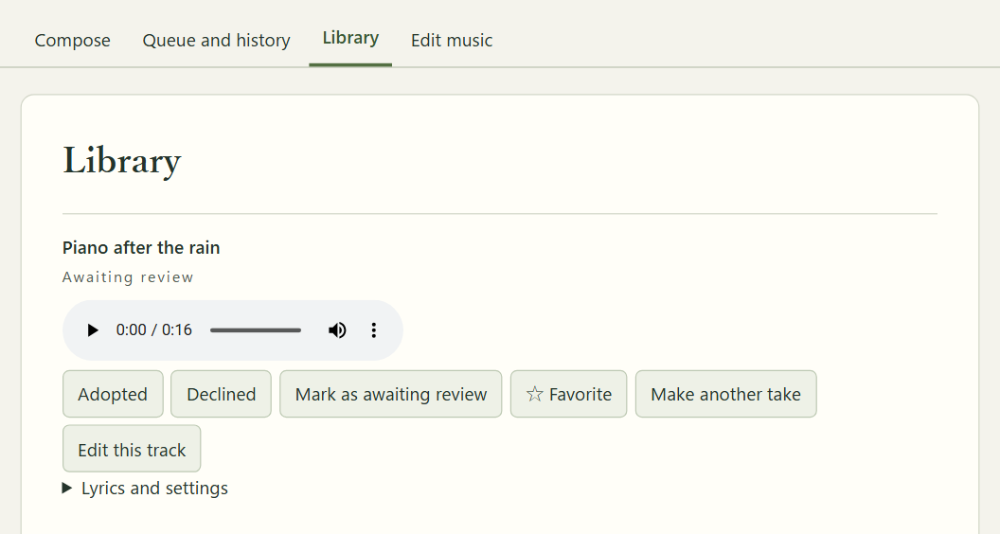
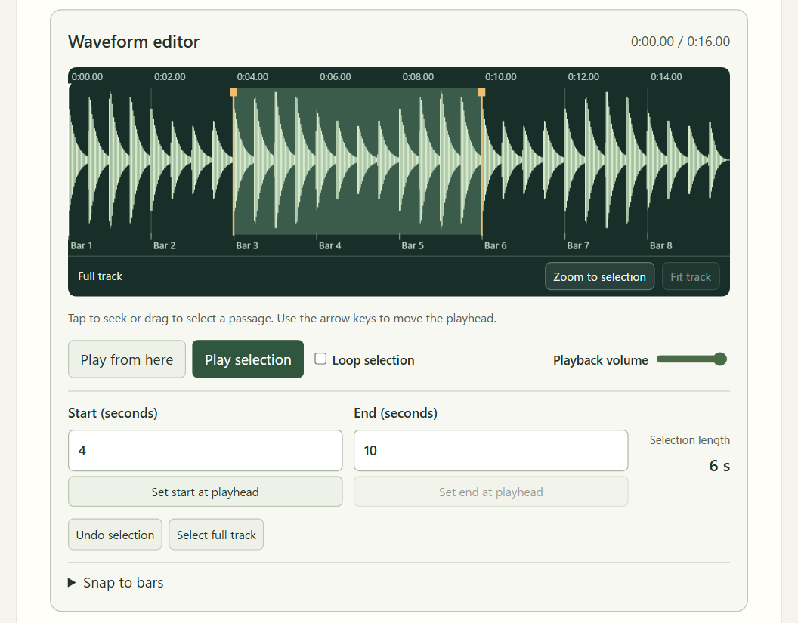

Sound Atelier user guide
Follow the actual screens from your first connection to auditioning and editing a finished track. Select any screenshot to open the full-size image.
1. Connect your music server
- Start Atelier on the computer you use for browsing and open http://localhost:39395/.
- Choose Import a connection file and select connection.json from the API on the GPU machine. This file contains your private client token.
- Wait for Online next to the server name. Import additional files to add servers, then choose which one to use.

2. Compose and queue a track
- Open Compose and choose Instrumental or Song with vocals. Give the track a theme, mood and target length.
- For a vocal track, enter only the lines to sing. Use Music prompt for instructions such as “start with solo piano.”
- Select Queue composition. Your request waits for a connected device to have spare capacity.

3. Follow the queue
- Open Queue and history and find the title. A queued job shows its position on the device.
- Once it is in progress, you can see the assigned device and progress. Select Cancel if you need to stop the job.
- When the track is ready, select Listen. For vocals, review the lyric audit and any passages that need another listen.

4. Listen and select a take
- Open Library and play the recording.
- Use Adopted for the take you want to use or Favorite to keep it easy to find. Open Lyrics and settings to see the lyrics and measured duration.
- Select Edit this track to work on a passage. Make another take queues a new job with the same settings.

5. Select and edit a passage
- Choose Trim and fade. Tap the waveform to move the playhead or drag to select a passage. You can also type a start and end time in seconds.
- Use Play selection to check the boundaries. Zoom to selection and Loop selection help you refine them. Use Snap to bars for music with a steady tempo.
- To replace a passage, choose Replace a passage with another track, select a donor and enter its start time. Select Queue edit to create the revised track.

Materials, pronunciations and Codex
- Open Lyrics, score and composition files to import or save prompt.md, lyrics.txt, score.abc, composition.json or a complete ZIP bundle.
- Import a finished take’s generation.json and choose Reproduce original take to use its final settings and check the master WAV against the original SHA-256.
- Use Correct a pronunciation to supply a Japanese reading such as 市場 → しじょう. Use Join or layer tracks for per-track gain and crossfade settings.
- Use Draft a prompt with AI or Work with Codex to share the current draft. Paste the request into Codex and review and apply its suggestion in Atelier.